KGAT: Knowledge Graph Attention Network for Recommendation
知识图谱增强推荐的介绍:
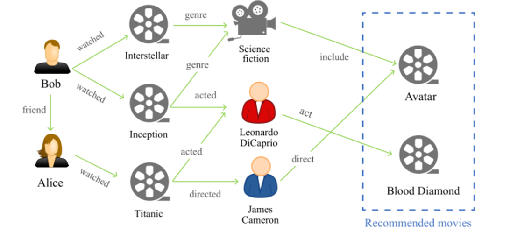 **如图所示，我们一般在传统推荐系统(协同过滤)中拥有交互信息(user--item),但是不可避免会遇到冷启动以及数据稀疏问题，所以这时就要采用额外的辅助信息(side infomation)来帮助学习，知识图谱就作为其中一种，来辅助学习embedding。知识图谱通常由(h,r,t)三元组构成，其中h,t为实体，r为relation，如上图的(Titanic,acted,Leonardo),一般知识图谱推荐中不太会有社交网络的信息(获取不到friend)**
**GCN之前常用基于embedding的方法和基于元路径的方法，其中基于embedding的方法基本采用TransE等知识图谱embedding学习的方法来学得item的embedding作为先验输入到协同过滤(Collaborative Filtering)模型中去:(TransE模型大致如下思想)，就是使得学得得embedding满足，h + r = t**
**总结:学到了KG的语义信息**
**而基于路径得思想就是，假设存在 user 和 item 之间存在 K 个路径，针对其中的路径 p，学习到其向量表示为** $\mathbf h_{\mathbf p}$** ，最终的路径信息如下，其中 g 可能是 max-pooling 或者是加权的 sum-pooling：**
**总结:学到了KG的联通信息**
**混合的方法基本就基于GCN的embedding传播思想,本文(KGAT)就是代表**
本文主要思想概括:
**将User-Item交互矩阵变成(user,interaction,item),这种类似知识图谱的结构，其中user和item作为实体，interaction为新引入的relation 向量，这样的话，交互矩阵就可以和知识图谱成为一个整体的矩阵，最后在使用GAT的方式来聚合embedding,注意:本文使用KGE(TransR )和Recommendation任务迭代训练**
collaborative knowledge graph (CKG)构造:
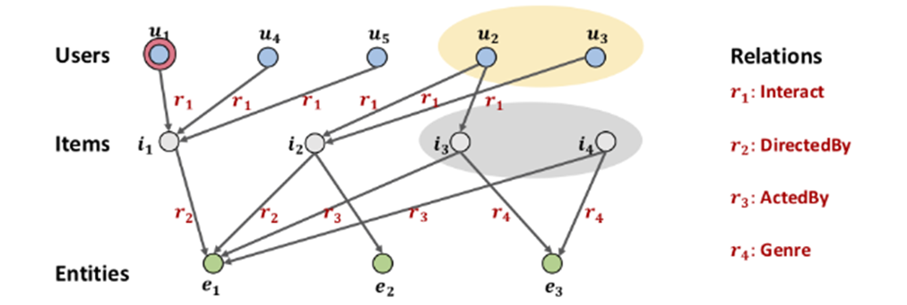 **如图和上述可知:构图方式就是将交互矩阵添加交互关系形成KG中的三元组**
KGE学习:
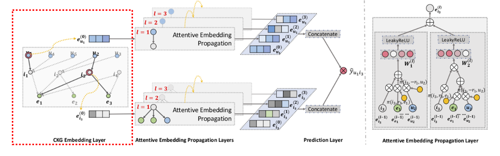 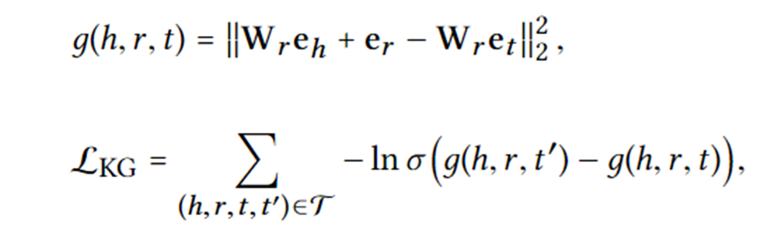GAT聚合:
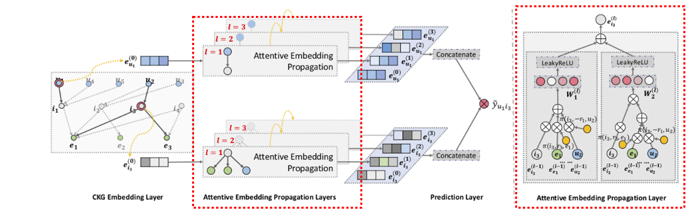 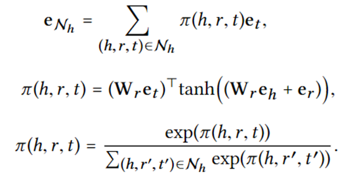 **常见的attention聚合三步骤的范式,注意在计算attrntion系数时将**$\mathbf W_{\mathbf r}$ **乘以** $\mathbf e_{\mathbf t}、\mathbf e_{\mathbf r}$**是为了将emedding投入到relation空间，这里relation仅仅用作计算attention系数，要和后面一篇文章做区分。最后把邻居embedding和本身的embedding合并:文章给了三种，图中画的是Bi-Interaction**
模型训练：
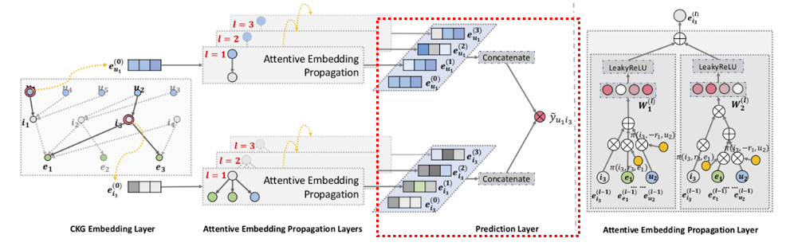 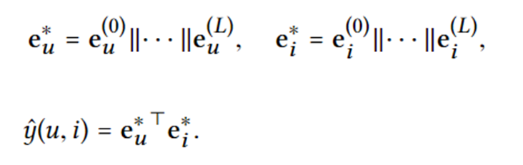 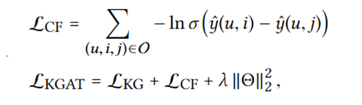实验结果:
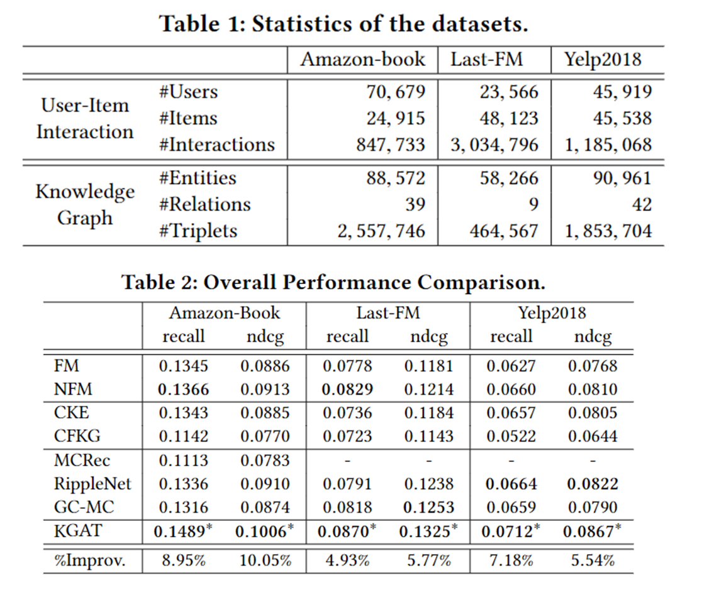Learning Intents behind Interactions with Knowledge Graph for Recommendation(KGIN)
本文主要思想概括:
**这篇文章和上一篇主体差不多(毕竟是一个组出的文章),就是在构造CKG和聚合时有点区别.1.本文在勾走CKG时考虑到用户的多兴趣，将User-Item改成(User,p1,Item),(User,p2,Item)等其中(p1,p2是兴趣向量由KG中的relation线性组合而成).2.在聚合时将relation信息融入进去，而不是上文中realtion仅仅用来计算attention系数，具体就是聚合时将relation和实体做哈达玛积.3.最后得到最终embedding是sum而不是concat,没有采用KGE**
collaborative knowledge graph (CKG)构造:
**对于每一对交互历史(u,i)，在引入intent之后，都会变成(u,p1,i),(u,p2,i),(u,p3,i),(u,p4,i)，假设有4个意图embedding**
兴趣建模:
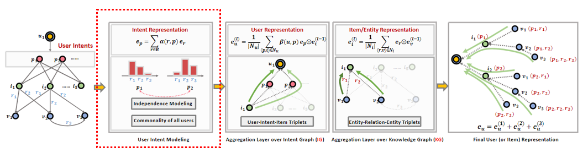
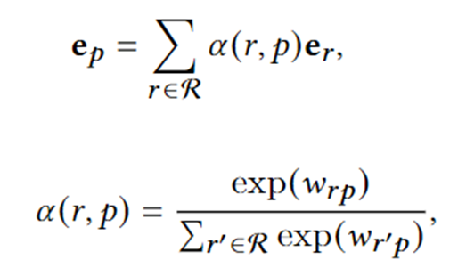 **这里作者仅采用随机可训练参数**$\mathbf w_{\mathbf {rp}}$，**为了使各个兴趣独立，采用如下方式:**
**思想:最小化兴趣直接的相似度-->最小化兴趣间的联合概率-->最小化兴趣间的互信息，或者直接最小化相关系数:**
Relational Path-aware Aggregation:
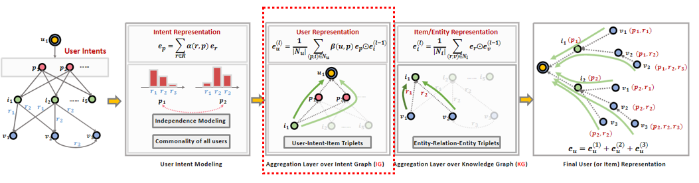 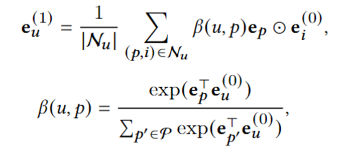 **这里和上一篇有点不同，在于在聚合时将relation和实体哈达玛积，就是relation不仅仅用来计算attention系数还要融入聚合的embedding中,主要这里作者对user和item采用了不同的聚合方式.**
模型训练：
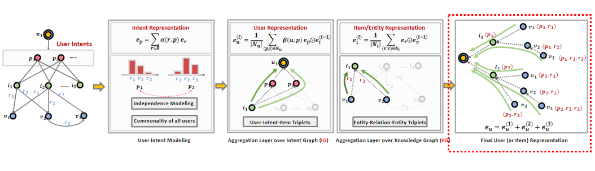 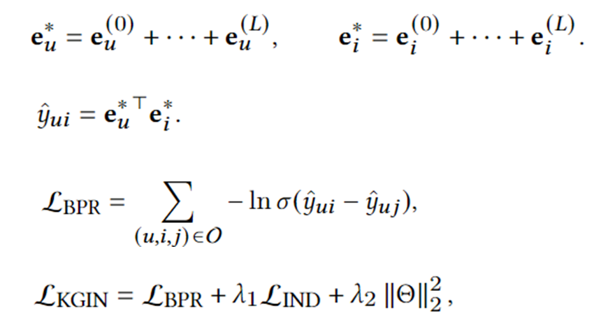 **这里采用sum 来结合每层的embedding，且没有用KGE(相对与上文)**
实验结果：
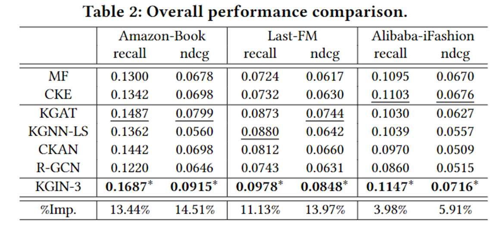注意这里KGAT的结果才是正确的，上一篇论文(KGAT)中，作者使用的NDCG计算有误，详情请看: Issues